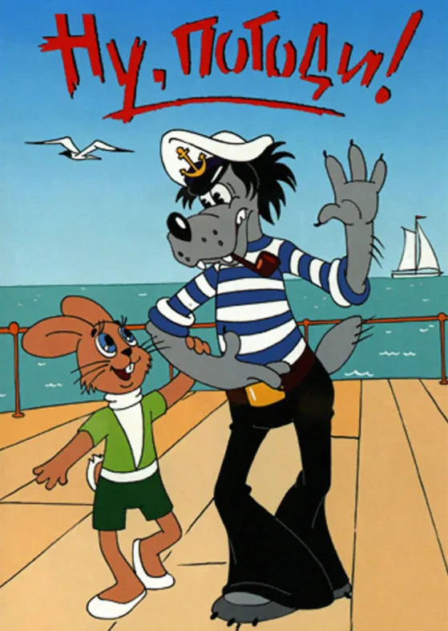

The Hare, commonly transliterated into English as Zayats (Russian: Заяц),
is portrayed as a supposedly positive hero. He is less developed than the Wolf
and most of his actions are simply reactions to the Wolf's schemes. In later
episodes, the role of the Hare becomes more active and developed, and he even
manages to save the Wolf on several occasions. The Hare is portrayed as a percussionist
in a number of episodes. The character was originally voiced by Klara Rumyanova.
The Hare is often mistaken as a female due to his appearance and voice; however, the Hare's
gender is never explicitly indicated. The Russian word for hare, заяц (zayats), is of masculine
gender. The female equivalent is зайчиха (zaychikha).
The Hare is almost always seen wearing the same green T-shirt and dark green shorts
, unlike the Wolf's ever-varying wardrobe. There are rare exceptions, however: in the
prologue of Episode 8, he appears in an ice-skating outfit, and later on in the same episode,
he is dressed with intentional absurdity as the grandfatherly Ded Moroz (Father Frost), the silliness
of which is only heightened by the Wolf then appearing as his granddaughter, Snegurochka, also known as
the Snow Maiden.